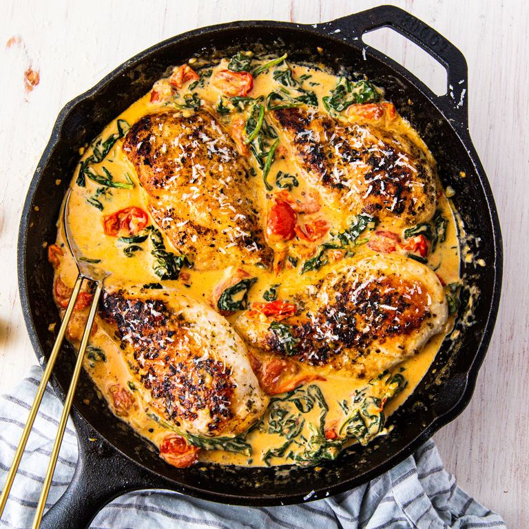

Tuscan chicken

Description
Creamy Tuscan chicken with cherry tomatoes & spinach.
Ingredients
- 1 tbsp. extra-virgin olive oil
- 3 chicken breasts
- Salt & black pepper
- 1 tsp. dried oregano
- 2 tbsp butter
- 3-4 cloves of garlic, minced
- 1 bag (75-90g) baby spinach
- 250g cherry tomatoes, halved
- 1.5-2 dl heavy cream
Steps
- In a skillet over medium heat, heat oil. Add chicken and season with
salt, pepper, and oregano. Cook until golden and no longer pink, 8
minutes per side. Remove from skillet and set aside.
- In the same skillet over medium heat, melt butter. Stir in garlic and
cook until fragrant, about 1 minute. Add cherry tomatoes and season with
salt and pepper. Cook until tomatoes are beginning to burst then add
spinach and cook until spinach is beginning to wilt.
- Stir in heavy cream and parmesan and bring mixture to a simmer.
Reduce heat to low and simmer until sauce is slightly reduced, about 3
minutes. Return chicken to skillet and cook until heated through, 5 to 7
minutes.